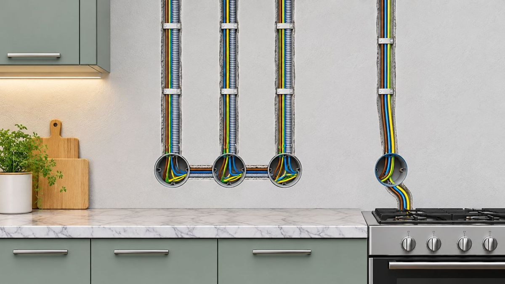

кухне 10–12 м² нужны 5–7 отдельных линий: варочная 3×6 мм² с автоматом 32 А, духовка и розеточная группа по 3×2,5 мм² с автоматами 16 А, свет 3×1,5 мм². Розетки ставят на 100–150 мм выше столешницы, не ближе 300 мм к мойке и 500 мм к плите. Переделка готового фартука стоит 25 000–90 000 руб. — дешевле спланировать до штробления.
Сколько линий нужно кухне
Кухня отличается от спальни не площадью, а одновременной нагрузкой. Чайник 2,0 кВт, духовка 3,2 кВт, посудомоечная машина 2,2 кВт, варочная панель 3,5–7,2 кВт, микроволновка 1,0 кВт, холодильник 0,15 кВт, вытяжка 0,2 кВт. Если посадить всё на две линии, автомат 16 А (3,5 кВт) выбьет при включении варочной и духовки одновременно.
| Потребитель | Мощность | Ток при 220 В | Отдельная линия |
|---|---|---|---|
| Варочная панель | 3,5–7,2 кВт | 16–33 А | Да, 3×6 мм², автомат 32 А |
| Духовой шкаф | 2,5–3,6 кВт | 11–16 А | Да, 3×2,5 мм², автомат 16 А |
| Посудомоечная машина | 1,8–2,4 кВт | 8–11 А | Да, 3×2,5 мм², автомат 16 А |
| Розетки столешницы (4–6 шт.) | до 3,5 кВт суммарно | до 16 А | Да, 3×2,5 мм², автомат 16 А |
| Холодильник | 0,1–0,3 кВт | 0,5–1,4 А | Желательно, 3×1,5 мм², автомат 10 А |
| Свет и вытяжка | 0,2–0,5 кВт | 1–2,3 А | Да, 3×1,5 мм², автомат 10 А |
Практика: на кухню 10–12 м² уходит 5–7 линий и 12–18 подрозетников. Меньше пяти линий — почти гарантированный перегруз при готовке «в три прибора».
Сечение кабеля и автоматы
Медь, кабель ВВГнг-LS или ВВГнг(А)-LS, скрытая прокладка в штробе или гофре. Алюминий на кухню не берём: он течёт под винтом и не держит 32 А на 6 мм² в бытовых розетках.
| Линия | Кабель | Автомат | Максимальная нагрузка |
|---|---|---|---|
| Варочная панель | 3×6 мм² | 32 А, двухполюсный | до 7,0 кВт |
| Духовка | 3×2,5 мм² | 16 А | до 3,5 кВт |
| Посудомойка, стиралка | 3×2,5 мм² | 16 А | до 3,5 кВт |
| Розеточная группа | 3×2,5 мм² | 16 А | до 3,5 кВт |
| Холодильник | 3×1,5 мм² | 10 А | до 2,2 кВт |
| Свет | 3×1,5 мм² | 10 А | до 2,2 кВт |
Автомат подбирается под кабель, а не под прибор: 2,5 мм² защищает автомат 16 А, 6 мм² — 32 А. Ставить 25 А на 2,5 мм² нельзя: кабель греется раньше, чем сработает защита.
Высота и шаг розеток
Столешница стандартно 850–900 мм от пола. Значит, низ блока розеток — 950–1050 мм, верх — 1150–1200 мм. Ниже 900 мм розетку перекроет техника, выше 1300 мм — не достанет шнур чайника.
| Зона | Высота от пола | Отступ от препятствия |
|---|---|---|
| Рабочий фартук | 950–1200 мм | — |
| От мойки | — | не ближе 300 мм по горизонтали |
| От газовой плиты | — | не ближе 500 мм, от электрической — 300 мм |
| Холодильник | 100–300 мм или 1200 мм | сбоку, не за корпусом |
| Посудомойка | 400–600 мм в соседней тумбе | не за машиной |
| Вытяжка | 1900–2100 мм | выше корпуса на 100 мм |

Блок из 4–6 розеток ставят на участке 1200–1500 мм между мойкой и плитой. Шаг между центрами — 100–120 мм: так в блок входят адаптеры и вилки с таймерами. Розетки с заземлением и шторками, IP44 — в зоне мойки.
Защита: УЗО, заземление, влага
Кухня — влажное помещение, поэтому все розеточные линии идут через УЗО 30 мА типа A или дифавтомат. Одно УЗО на 4–6 групп допустимо, но тогда его срабатывание обесточит всю кухню; практичнее дифавтомат на посудомойку и розетки фартука.
- Заземление — отдельная жила PE, не «ноль вместо земли»: в старых домах с TN-C ставят УЗО и не соединяют PE с рабочим нулём.
- Розетки у мойки — со шторками, степень защиты IP44, корпус с двойной изоляцией.
- Кабель за духовкой и варочной — в металлической гофре или вне зоны нагрева: температура за шкафом достигает 60–80 °C.
- Соединения — только в подрозетниках или распаечных коробках, не в штробе и не «скруткой под плиткой».
Свет: три сценария вместо одной люстры
| Сценарий | Светильники | Мощность на 10 м² | Цветовая температура |
|---|---|---|---|
| Общий | люстра или 4–6 спотов | 60–100 Вт LED | 3000–4000 К |
| Рабочая зона | LED-профиль под верхними шкафами | 8–12 Вт/м | 4000 К |
| Остров / обеденный стол | 3 подвеса | 15–25 Вт | 2700–3000 К |
Подсветку фартука включают отдельным выключателем у входа: иначе вечером горит всё сразу. Блок питания LED-ленты прячут в цоколе верхних шкафов с доступом, а не за гипсокартоном.
Порядок работ
- Составить перечень техники с мощностями и паспортами — до закупки кабеля.
- Нарисовать план кухни с привязкой розеток к мойке, плите и углам.
- Развести линии в щитке: отдельные автоматы и УЗО, подписать группы.
- Отштробить стены, уложить кабель, закрепить подрозетники по уровню.
- Сделать фотофиксацию трасс до штукатурки — пригодится при сверлении.
- Смонтировать розетки после плитки, проверить индикатором и тестером УЗО.
Смета 2026
| Работа / материал | Цена | На кухню 10–12 м² |
|---|---|---|
| Кабель 3×2,5 мм² | 90–130 руб./м | 60–90 м — 6 000–11 000 руб. |
| Кабель 3×6 мм² | 220–320 руб./м | 12–18 м — 3 000–5 500 руб. |
| Штробление | 350–600 руб./м | 70–100 м — 25 000–60 000 руб. |
| Монтаж точки (подрозетник, розетка) | 900–1 800 руб. | 12–18 шт. — 11 000–32 000 руб. |
| Дифавтомат 16 А | 2 500–4 500 руб. | 3–4 шт. — 8 000–18 000 руб. |
| Дифавтомат 32 А | 3 500–6 000 руб. | 1 шт. |
Итого электрика кухни «под ключ» — 45 000–110 000 руб. в зависимости от длины трасс и состояния щитка. Переделка после укладки плитки: снять фартук, перештробить, заменить 2–3 м² плитки — 25 000–90 000 руб. сверху.
Чек-лист перед штроблением
- Перечень техники с мощностями записан, варочная и духовка — на отдельных линиях.
- Розетки не ближе 300 мм к мойке и 500 мм к газовой плите.
- УЗО 30 мА типа A есть на все розеточные группы.
- Высота блока розеток проверена по столешнице и фартуку.
- Фотофиксация трасс сделана до штукатурки.
Частые вопросы
Можно ли оставить одну линию на варочную и духовку?
Только если суммарная мощность до 3,5 кВт и автомат 16 А. Варочная 7,2 кВт плюс духовка 3,2 кВт — это 47 А, одна линия 3×6 мм² их не выдержит.
Нужна ли розетка за холодильником?
Нет: её не достать, а вилка мешает придвинуть корпус. Ставят сбоку в соседней тумбе или над холодильником на 1200 мм.
Хватит ли автомата 25 А на кабель 2,5 мм²?
Нет. Длительно допустимый ток 2,5 мм² при скрытой прокладке — 21 А, автомат 25 А не защитит кабель. Только 16 А.
Обязательно ли УЗО, если есть заземление?
Да. Заземление отводит ток при пробое, но не защищает человека при касании фазного провода. УЗО 30 мА срабатывает за 10–30 мс.
Сколько розеток нужно на фартук?
На кухню 10–12 м² — 6–8 штук: чайник, кофемашина, блендер, миксер, зарядки, мультиварка. Блок из 4 розеток плюс 2 отдельные у плиты.
Можно ли вести кабель по потолку?
Можно, в гофре под натяжным полотном, но спуски к розеткам всё равно штробятся. Трасса по потолку дешевле на 20–30 %, если стены не штробятся под фартуком.
Источники
Материал подготовлен с опорой на следующие документы и данные:
Дисклеймер
Материалы журнала «Ремонт на примерах» носят информационный характер. Приведённые цены, сроки и нормативы являются ориентировочными: они зависят от региона, состояния объекта, уровня исполнителей и текущей рыночной ситуации, поэтому не могут служить точной сметой или гарантией результата. Перед началом работ проконсультируйтесь со специалистами и проверяйте актуальные требования нормативных документов. Редакция не несёт ответственности за решения, принятые на основании этих материалов.